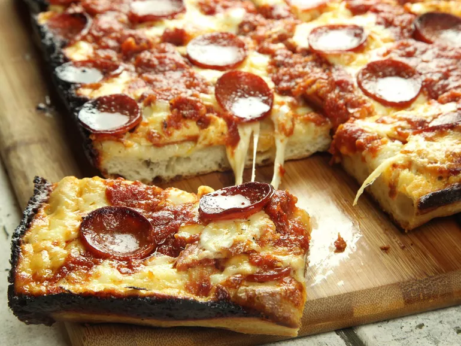

Detroit Style Pan Pizza

Description
Another favorite of mine is this Detroit style pizza. This I would say is the
most difficult of the three recipes I have put on here because it involves
making a dough, which making any kind of bread is not easy by a long shot.
As for this style of pizza, don't let its rectangular shape bother you and keep
you from trying one of my favorite styles of pizza (I don't dislike any pizza).
It's bready base is topped with pepperoni, then cheese, followed by more
pepperoni and the sauce. Yes, meat under cheese under sauce and more meat. Seems
backwards, right? Put whatever toppings you want on it but only pepperoni
is a great place to start.
Ingredients
I'll split this in three parts, the dough, sauce, and finish.
For the dough:
- 300g bread flour (10.5 ounces; about 2 generous cups)
- 5g instant yeast (0.15 ounce; about 1 teaspoon)
- 9g salt (0.3 ounce; about 1.5 teaspoons table salt or 1 tablespoon kosher salt)
- 220g water (7.75 ounces; about 1 cup minus 1.5 tablespoons)
- Extra-virgin olive oil as needed
For the sauce:
- 2 tablespoons (30ml) extra-virgin olive oil
- 3 medium cloves garlic, minced
- 2 teaspoons (about 5g) dried oregano
- Dash red pepper flakes
- 1 (28 ounce; 800g) can high-quality crushed tomatoes
- 1 teaspoon (about 6g) granulated garlic powder
- 1 teaspoon (about 6g) granulated onion powder
- 1 tablespoon (about 15g) sugar
- Kosher salt to taste
To finish:
- 12 ounces (340g) Brick Cheese, cut into 1/2-inch cubes (see note)
- 12 ounces (340g) high-quality pepperoni, cut into 1/8-inch slices (optional)
Steps
-
To Make the Dough in a Stand Mixer: Combine flour, yeast, and salt in
bowl of a stand mixer fitted with a dough hook attachment. Stir to combine,
then add water. Mix on low speed until dough comes together into a rough
ball, then turn off mixer and let rest for 10 minutes. Continue mixing at
medium-low speed until dough forms a smooth, silky ball, and should be
sticking to the bottom of the bowl as it kneads, rather than riding around
the edges, about 10 more minutes. Remove dough hook, form dough into a tight
ball, set in the bottom of the mixer bowl, cover tightly with plastic wrap,
and set aside in a warm place until dough has roughly doubled in volume,
about 2 hours.
-
To Make the Dough by Hand: Combine flour, yeast, and salt in
bowl of a stand mixer fitted with a dough hook attachment. Whisk to combine,
then add water and stir with a wooden spoon until a rough ball of dough has
formed, then set aside for 10 minutes. Turn the dough out onto a countertop
and and knead a smooth, silky ball has formed, about 10 minutes. Transfer
dough to a bowl, form a tight ball, cover tightly with plastic wrap,
and set aside in a warm place until dough has roughly doubled in volume,
about 2 hours.
-
Pour a couple tablespoons of olive oil into the bottom of a Detroit-style
anodized pan or two 8- by 8-inch cake pans. (Split dough in half if using
cake pans) Transfer dough to pan(s) and turn to coat in oil. Press down on
dough and spread it toward the edges. You won't be able to get it all the
way to the edges, which is okay. Spread it as much as you can without
tearing, then cover tightly in plastic wrap and set aside for 30 minutes to
allow the dough to relax.
-
Return to dough and stretch it out again. It should be able to reach the
edges this time. If not, let it rest a little more and try again. To get the
dough to stay in the corners, stretch it up beyond the corners so that it
pulls back into place. Once dough is stretched, cover again and set aside
while you make the sauce.
-
For the Sauce: Adjust over rack to lowest position and preheat oven
to 550°F (290°C), or as close to it as your oven gets. Heat 2 tablespoons
(30ml) of olive oil in a medium saucepan over medium heat until shimmering.
Add minced garlic, oregano, and pepper flakes and cook, stirring, until
fragrant, about 30 seconds. Add tomatoes, garlic powder, onion powder, and
sugar and cook until reduced to about 3 cups, about 30 minutes. Season to
taste with salt.
-
To Form the Pizza: Press down on dough with your fingertips to remove
any large air bubbles. Lay half of the pepperoni (if using) evenly over the
face of the dough. Top with cheese, spreading it evenly all the way to the
very edges of the pan, then add remaining pepperoni. Spoon the sauce over
the surface in 3 even rows. (You will only need about half the sauce - save
the rest for another pizza.)
-
Transfer to oven and bake until edges are black and bubbly and exposed
cheese on top is starting to lightly brown, 12 to 15 minutes (longer if
temperature is lower than 550°F). Transfer to a trivet or folded kitchen
towel on countertop.
-
Run a thin metal spatula all the way around the edges of the pan to loosen
the pizza. Carefully lift out and slide it onto a cutting board. Cut pizza
and serve.
Special Equipment
The stand mixer is optional but helps. A Detroit-style 10 by 14 inch anodized
aluminum pan is also helpful but optional.
Notes
-
Brick cheese is a high-fat aged cheese from Wisconsin that has a buttery
flavor and browns very well, giving Detroit pizza its distinct flavor. It
can be ordered online from Amazon but if it's unavailable, you can use a
combination of Jack or young cheddar and low-moisture, full-fat mozzarella.
- For best results, use a Detroit-style anodized aluminum pan.
Link to recipe on Serious Eats.